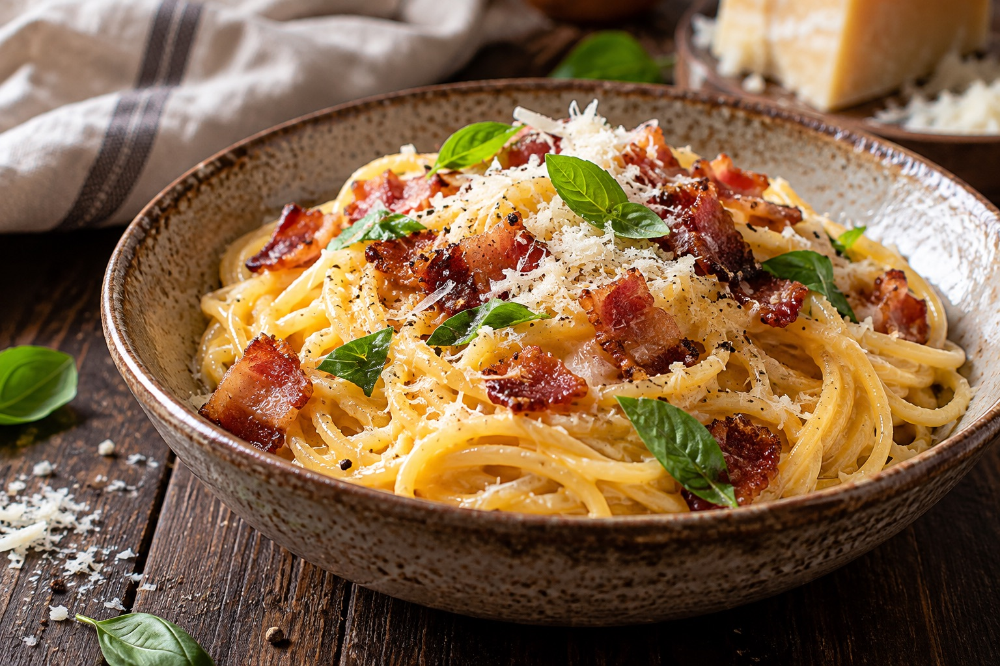

НазадПаста Карбонара
Нежная, сливочная паста с хрустящим беконом и ароматным пармезаном. Настоящая итальянская классика у вас дома!
25 минВремя приготовления
4 порцииНа компанию

НазадНежная, сливочная паста с хрустящим беконом и ароматным пармезаном. Настоящая итальянская классика у вас дома!
Любимые блюда для уютных вечеров дома.